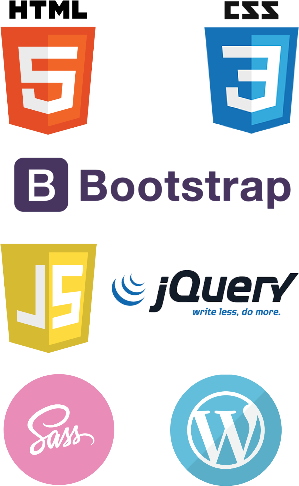

Sobre Mim
Meu nome é Alex Dmingos da Silva, e eu sou um profissional apaixonado por tecnologia e automação industrial. Com uma formação sólida como técnico em automação industrial e técnico em mecatrônica, eu tenho uma base sólida em engenharia e sistemas complexos. Minha jornada profissional começou quando decidi me aprofundar no mundo da automação industrial, uma área que sempre me fascinou. Durante meus estudos como técnico em automação industrial, aprendi a projetar, implementar e manter sistemas automatizados em ambientes industriais. Trabalhei em uma variedade de projetos que abrangiam desde linhas de produção automatizadas até sistemas de controle de processos complexos. Além disso, minha formação como técnico em mecatrônica me proporcionou um amplo conjunto de habilidades que combinam engenharia mecânica e eletrônica. Isso me permitiu abordar projetos de forma holística, considerando não apenas os aspectos elétricos e eletrônicos, mas também os componentes mecânicos que fazem parte dos sistemas que desenvolvo. Atualmente, estou focado em expandir ainda mais meu conhecimento e habilidades na área de desenvolvimento de sistemas. Estou envolvido em estudos e cursos que me ajudam a compreender os princípios de desenvolvimento de software, programação e análise de sistemas. Estou animado em aplicar meu conhecimento em automação industrial e mecatrônica em conjunto com minhas novas habilidades em desenvolvimento de sistemas para criar soluções inovadoras e eficazes para desafios tecnológicos atuais. Fora do meu ambiente de trabalho e estudos, sou alguém que valoriza a aprendizagem contínua e o compartilhamento de conhecimento. Gosto de acompanhar as tendências tecnológicas mais recentes, participar de grupos de discussão e fóruns online, e colaborar com outros profissionais da área para trocar ideias e experiências. Em resumo, sou um técnico em automação industrial e mecatrônica apaixonado por tecnologia e em constante busca por aprimoramento. Minha jornada profissional e meus estudos em desenvolvimento de sistemas me capacitam a abordar uma ampla gama de projetos e desafios com criatividade e expertise técnica. Estou ansioso para contribuir para o avanço da tecnologia e da automação industrial por meio da aplicação das minhas habilidades e conhecimentos.
Certificações
Projetos
Ladder
A linguagem de programação Ladder é uma ferramenta gráfica usada para desenvolver programas ou softwares para CLPs (Controladores Lógico Programáveis), também conhecidos como PLCs. É responsável pela lógica de controle, indicando para o controlador qual ação deve ser realizada a partir dos valores de entrada. Desta forma, ele atualiza suas saídas ou atuadores para que interajam ou alterem diferentes processos industriais. Recebe esse nome – ladder, que significa escada, em inglês – pois seus símbolos se assemelham a degraus. Também é conhecida por Linguagem Ladder, Diagrama Ladder, Diagrama de Escada ou Lógica Ladder.
Cnc Parafusos
Ressaltos na moldagem por injeção são saliências em peças plásticas adicionadas para melhorar a resistência da peça. São peças cilíndricas moldadas por injeção com furos que acomodam insertos roscados, parafusos e outros fixadores mecânicos. Os ressaltos na moldagem por injeção são recursos muito importantes que servem como pontos de montagem e fixação de peças. Eles também melhoram as peças, a moldabilidade do projeto e a vida útil do molde, ao mesmo tempo em que reduzem os custos de fabricação.